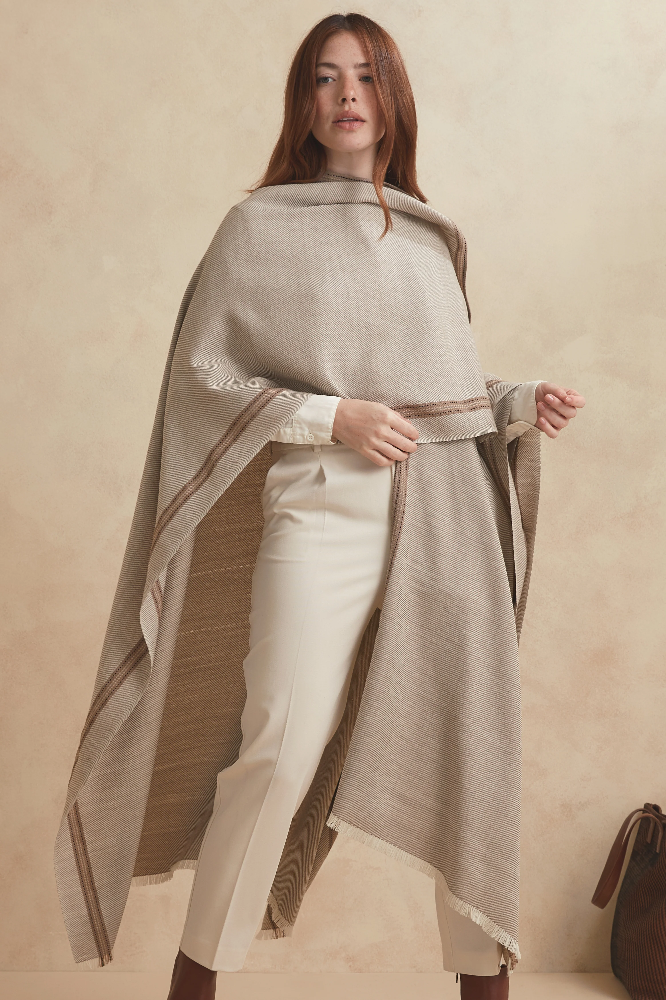

PIEZA EMBLEMÁTICATRADICIÓN · DISEÑO · IDENTIDADPONCHO BANDERAUna identidad
Una identidad
que se lleva puesta.
El Poncho Bandera combina la fuerza de un símbolo compartido con el trabajo del telar artesanal. Una pieza protagonista para llevar cerca lo que nos representa.
Consultá por esta pieza